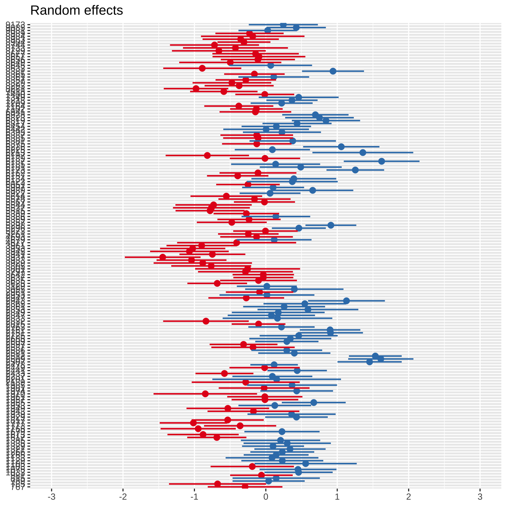
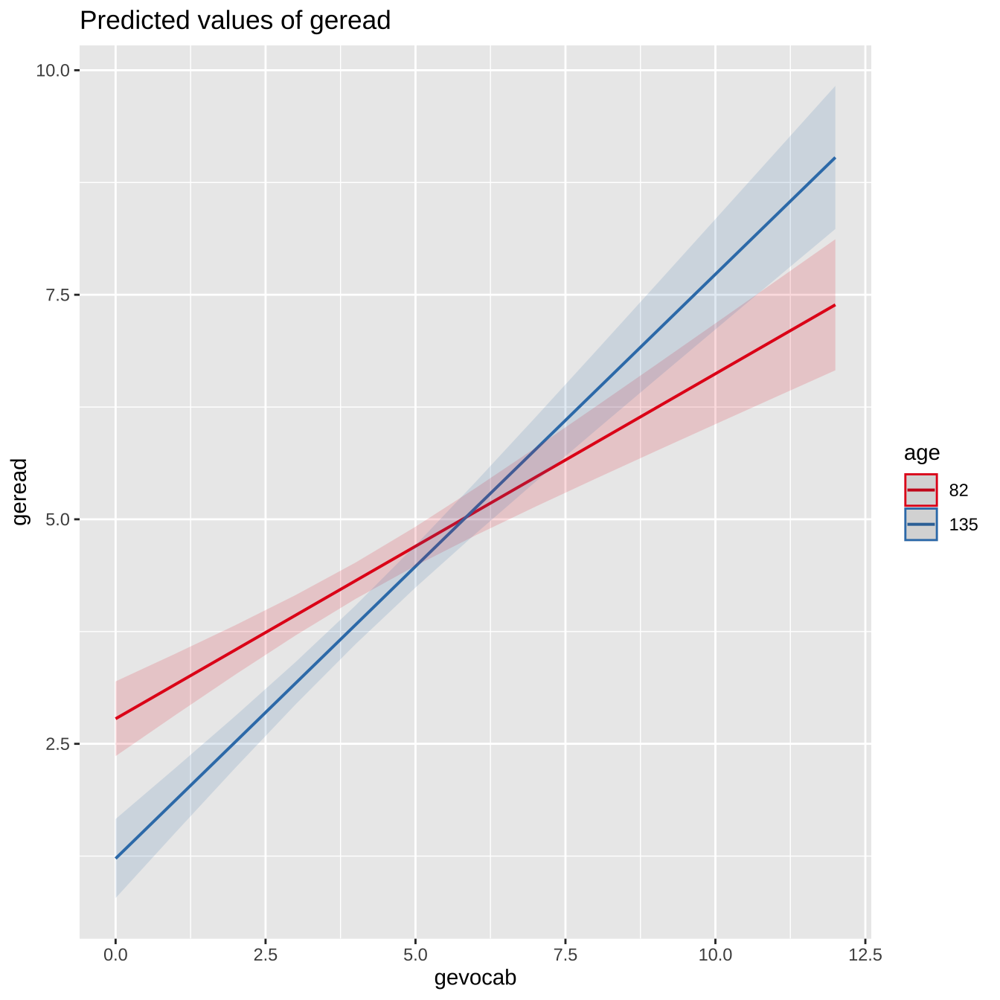
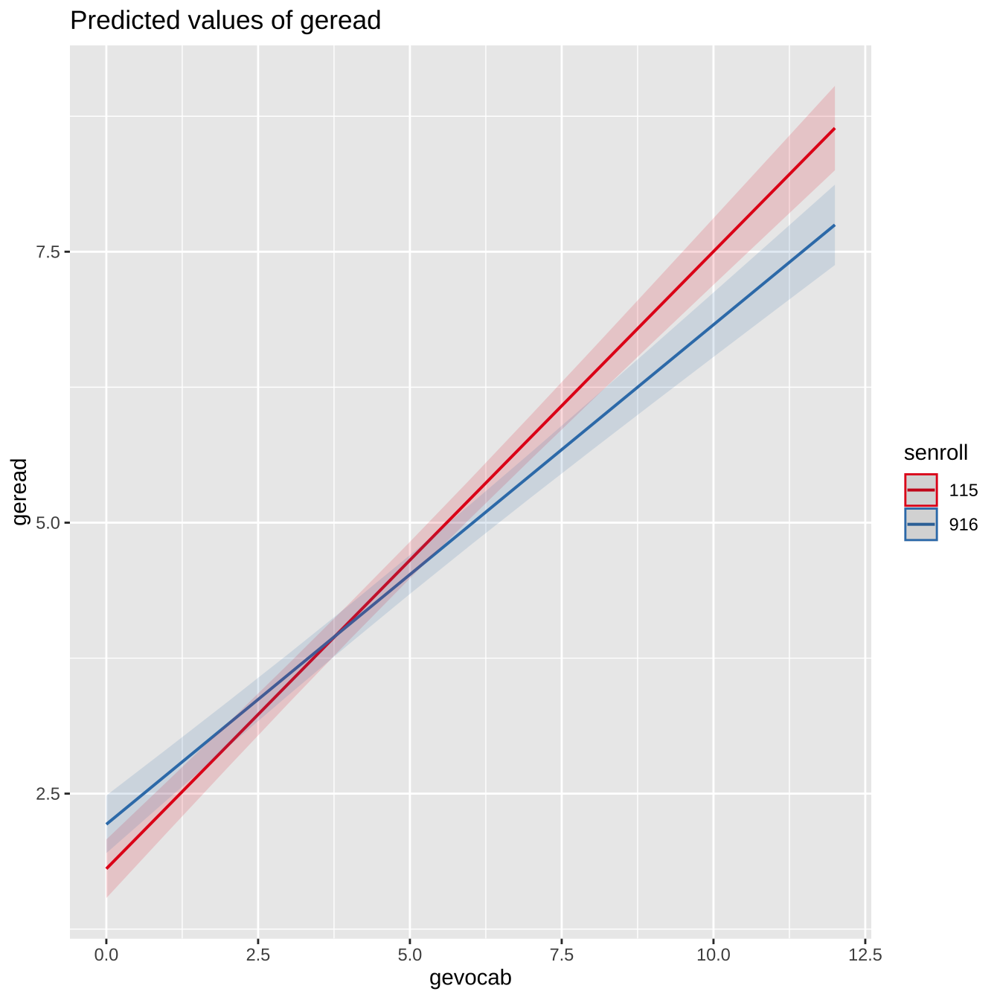

library(tidyr)
library(dplyr)
library(ggplot2)
library(knitr)
library(kableExtra)
library(lme4)
library(lmerTest)
library(brms)
library(stringr)
library(xfun)
library(lattice)
library(cowplot)
library(sjPlot)
library(MuMIn)
library(performance)
# 아래 3 문장은 한글을 포함한 ggplot 그림이 포함된 HTML, PDF로 만드는 경우 사용
library(showtext)
font_add_google("Nanum Pen Script", "gl")
showtext_auto()11 반복측정자료 실습 2
11.1 필요한 패키지와 함수
11.2 계층모형
이제 계층모형에 대한 전형적인 예제와 분석을 살펴보고자 한다. 아래에서 사용할 자료와 분석 내용은 Finch, Bolin, 와/과 Kelley (2019) 3장을 따른 것이다.
성취도 시험 데이터(Achieve)는 160개 학교(school) 내에 위치한 10,903명의 3학년 학생으로부터 수집되었다. 학교 규모는 11개 학급(class)에서 143 개 학급까지 다양하며, 평균 규모는 68.14 학급이다..
어휘력 점수가 일반적인 읽기 성취도를 예측하는 데 어느 정도까지 사용될 수 있는지 알아보고자 했습니다. 학생들은 학교 내에 중첩되어 있어 표준 선형 회귀 모델이 적합하지 않았습니다. 이 경우 학교는 무작위 효과이고 어휘 점수는 고정되어 있습니다. 먼저 독립 변수가 없고 절편만 있는 공분산 모델을 피팅합니다. 이 모델은 방정식 (2.11)에서와 같이 학교별 군집화만 고려할 때 잔차 및 절편 분산의 추정치를 구하는 데 유용합니다. 널 모델을 추정하는 데 필요한 lmer 구문은 다음과 같습니다.
11.3 학생 성취도 자료
학생 성취도 자료는 Finch, Bolin, 와/과 Kelley (2019) 의 홈페이지에서 다운로드 받을 수 있다.
Achieve <- read.csv("../data/Achieve.csv", header=T)
head(Achieve,n=3) row id region corp school class gender age race geread gevocab gereadcm
1 1 1 2 940 767 1 2 104 5 3.5 3.1 3.2
2 2 2 2 940 767 1 2 106 5 1.2 2.8 2.0
3 3 3 2 940 767 1 2 112 5 2.1 1.7 1.9
gelang gelangmc gelangcm gemath gemathcp gemathcm getotal npanverb npamem
1 2.3 4.3 3.0 3.1 2.7 2.9 3.0 16 56
2 1.8 1.7 1.6 3.2 4.3 3.8 2.7 39 79
3 2.5 2.2 2.4 3.6 3.2 3.4 2.7 37 41
npaverb npatotal csi multi clenroll classize ptratio ptia locale chapter1
1 46 26 90 2 16 1 16 2 7 1
2 37 47 99 2 16 1 16 2 7 1
3 34 35 94 2 16 1 16 2 7 1
ses context calender senroll sattend white1 black1 hispanc1 asian1 aindian1
1 80.4 929 1 463 95.6 99.8 0 0 0 0
2 80.4 929 1 463 95.6 99.8 0 0 0 0
3 80.4 929 1 463 95.6 99.8 0 0 0 0
multi1 total1 noteach avgage1 avgexp1 avgsal1 spert thrdclss thrdstud passla1
1 0.2 0.2 28.5 46.2 20.6 43517 16.3 4 60 63
2 0.2 0.2 28.5 46.2 20.6 43517 16.3 4 60 63
3 0.2 0.2 28.5 46.2 20.6 43517 16.3 4 60 63
passmth1 passbth1 tmnnce1 rmdnce1 lamdnce1 mmdnce1 tmdnce1 avgcsi1 geog
1 74 52 60.5 57.6 55 61 59.7 99 2
2 74 52 60.5 57.6 55 61 59.7 99 2
3 74 52 60.5 57.6 55 61 59.7 99 2
totepp cenroll cattend freelnch lep speced minority white2 black2 hispanc2
1 5956 3115 95.9 16 0.2 14.4 1.2 3077 1 12
2 5956 3115 95.9 16 0.2 14.4 1.2 3077 1 12
3 5956 3115 95.9 16 0.2 14.4 1.2 3077 1 12
asian2 aindian2 multi2 total2 thrdadm thrdtech avgage2 avgexp2 avgsal2
1 3 1 21 38 208 11 45.2 18.4 41096
2 3 1 21 38 208 11 45.2 18.4 41096
3 3 1 21 38 208 11 45.2 18.4 41096
thrdaide passla2 passmth2 passbth2 tmnnce2 rmdnce2 lamdnce2 mmdnce2 tmdnce2
1 3 67 70 52 59.4 57.8 59.8 60.6 60.8
2 3 67 70 52 59.4 57.8 59.8 60.6 60.8
3 3 67 70 52 59.4 57.8 59.8 60.6 60.8
rmediate
1 18
2 18
3 18성취도 자료 Achieve는 160개 학교를 추출하고 각 학교마다 작게는 11명, 크게는 162명의 학생들을 추출하여 학교의 여러 가지 정보와 학생들의 다양한 성적을 수집한 자료이다.
school_info <- Achieve %>% group_by(school) %>% summarise(n = n())
summary(school_info$n) Min. 1st Qu. Median Mean 3rd Qu. Max.
11.00 45.00 63.00 64.50 81.25 162.00 성취도 자료 Achieve는 계층적 자료이며 다음과 같은 계층구조를 가지고 있다.
- 계층 1 : 학생
- 계층 2 : 학교
분석의 목적은 학교의 특성과 학생들의 다양한 성적들 (예를 들어 어휘 능력, vocabulary scores, gevocab)이 학생들의 읽기 성취도 (general reading achievement, geread)에 어떤 영향을 미치는지 분석하는 것이다.
이제 \(i\) 번째 학교에 속한 \(j\) 번쨰 학생의 읽기 성취도 점수를 \(y_{ij}\) 라고 하자.
11.4 단순 계층모형
가장 단순한 계층 모형으로서 읽기 성취도 점수에 대하여 학교 school 이 임의효과인 모형을 고려해 보자.
\[ y_{ij} = \beta_0 + b_{0i} + e_{ij} \tag{11.1}\]
위의 식에서 \(\beta_0\) 는 전체 평균 점수를 나타내는 모수이며 학교에 대한 임의효과 \(b_{0i}\) 와 오차항 \(e_{ij}\) 는 서로 독립이며 다음과 같은 분포를 따른다.
\[ b_{0i} \sim N(0, \sigma_{b0}^2 ) , \quad e_{ij} \sim N(0, \sigma_e^2) \]
이제 lmer 함수로 모형 식 11.1 을 적합시켜 보자.
model1 <- lmer(geread~1 +(1|school), data=Achieve)
summary(model1)Linear mixed model fit by REML. t-tests use Satterthwaite's method [
lmerModLmerTest]
Formula: geread ~ 1 + (1 | school)
Data: Achieve
REML criterion at convergence: 46268.3
Scaled residuals:
Min 1Q Median 3Q Max
-2.3229 -0.6378 -0.2138 0.2850 3.8812
Random effects:
Groups Name Variance Std.Dev.
school (Intercept) 0.3915 0.6257
Residual 5.0450 2.2461
Number of obs: 10320, groups: school, 160
Fixed effects:
Estimate Std. Error df t value Pr(>|t|)
(Intercept) 4.30675 0.05498 158.53888 78.34 <2e-16 ***
---
Signif. codes: 0 '***' 0.001 '**' 0.01 '*' 0.05 '.' 0.1 ' ' 1tab_model(model1)| geread | |||
|---|---|---|---|
| Predictors | Estimates | CI | p |
| (Intercept) | 4.31 | 4.20 – 4.41 | <0.001 |
| Random Effects | |||
| σ2 | 5.05 | ||
| τ00 school | 0.39 | ||
| ICC | 0.07 | ||
| N school | 160 | ||
| Observations | 10320 | ||
| Marginal R2 / Conditional R2 | 0.000 / 0.072 | ||
추정결과를 보면 학생들의 읽기 성취도의 전체 평균의 추정량은 \(\hat \beta_0= 4.3067534\)이다. 임의효과의 분산성분 \(\sigma_{b0}\) 과 오차항의 븐산 \(\sigma_e\)의 추정량은 다음과 같다.
\[ \hat {\sigma}^2_{b0} = 0.3915154 , \quad \hat {\sigma}^2_{e} = 5.0450083 \]
지난 강의에서 언급한 그룹내 상관계수(ICC)의 값을 구해보면 0.072 로서 같은 학교에 속한 학생들의 성적들의 상관계수를 의미한다.
\[ \text{ICC } = \frac{\hat {\sigma}^2_{b0} }{\hat {\sigma}^2_{b0} + \hat {\sigma}^2_{e} } = 0.072 \]
160개의 학교에 대한 임의효과에 대한 예측값 \(\hat b_{0i}\)을 예측구간과 같이 나타내면 다음 그림과 같이 나타난다.
sjPlot::plot_model (model1, type = "re")Warning in checkMatrixPackageVersion(): Package version inconsistency detected.
TMB was built with Matrix version 1.6.0
Current Matrix version is 1.5.4.1
Please re-install 'TMB' from source using install.packages('TMB', type = 'source') or ask CRAN for a binary version of 'TMB' matching CRAN's 'Matrix' package
11.5 계층 1 설명변수가 있는 모형
이제 학생들의 어휘능력 성적 gevocab를 설명 변수(\(x_{ij1}\))로 포함하는 모형을 고려해 보자. 첫 번째 계층의 구성원인 학생들에 대한 성적이므로 계층 1 설명변수(level 1 covariate)라고 부른다. 일단 어휘능력 성적은 고정 효과로서 모집단 전체에 대한 회귀 계수를 나타낸다.
\[ y_{ij} = (\beta_0 + b_{0i}) + \beta_1 x_{ij1} + e_{ij} \tag{11.2}\]
model11 <- lmer(geread~gevocab +(1|school), data=Achieve)
summary(model11)Linear mixed model fit by REML. t-tests use Satterthwaite's method [
lmerModLmerTest]
Formula: geread ~ gevocab + (1 | school)
Data: Achieve
REML criterion at convergence: 43137.2
Scaled residuals:
Min 1Q Median 3Q Max
-3.0823 -0.5735 -0.2103 0.3207 4.4334
Random effects:
Groups Name Variance Std.Dev.
school (Intercept) 0.09978 0.3159
Residual 3.76647 1.9407
Number of obs: 10320, groups: school, 160
Fixed effects:
Estimate Std. Error df t value Pr(>|t|)
(Intercept) 2.023e+00 4.931e-02 7.582e+02 41.03 <2e-16 ***
gevocab 5.129e-01 8.373e-03 9.801e+03 61.26 <2e-16 ***
---
Signif. codes: 0 '***' 0.001 '**' 0.01 '*' 0.05 '.' 0.1 ' ' 1
Correlation of Fixed Effects:
(Intr)
gevocab -0.758앞에서 적합한 평균모형의 추정값과 다음과 같이 비교하여 나타낼 수 있다.
tab_model(model1, model11)| geread | geread | |||||
|---|---|---|---|---|---|---|
| Predictors | Estimates | CI | p | Estimates | CI | p |
| (Intercept) | 4.31 | 4.20 – 4.41 | <0.001 | 2.02 | 1.93 – 2.12 | <0.001 |
| gevocab | 0.51 | 0.50 – 0.53 | <0.001 | |||
| Random Effects | ||||||
| σ2 | 5.05 | 3.77 | ||||
| τ00 | 0.39 school | 0.10 school | ||||
| ICC | 0.07 | 0.03 | ||||
| N | 160 school | 160 school | ||||
| Observations | 10320 | 10320 | ||||
| Marginal R2 / Conditional R2 | 0.000 / 0.072 | 0.276 / 0.295 | ||||
학생들의 어휘능력 성적은 읽기 성취도를 예측하는데 유의한 변수임이 t-검정로 나타난다(t-통계량 = 61.26). 또한 다음의 추정식과 같이 어휘능력 성적이 1점 증가하면 평균적으로 읽기 성취도은 0.5점 증가한다.
\[ \hat {\sigma}^2_{b0} = 0.0997786 , \quad \hat {\sigma}^2_{e} = 3.7664703 \]
따라서 위의 모형에 따른 그룹내 상관계수(ICC)의 값을 구해보면 다음과 같다.
s0 <- (as.data.frame(VarCorr(model11))["vcov"][1,1])
se <- (as.data.frame(VarCorr(model11))["vcov"][2,1])
icc <- s0/(s0+se)
icc[1] 0.02580759\[ \text{ICC } = \frac{\hat {\sigma}^2_{b0} }{\hat {\sigma}^2_{b0} + \hat {\sigma}^2_{e} } = 0.0258076 \]
11.6 주변 결정계수와 조건부 결정계수
위의 모형 식 11.2 을 적합한 결과에서 Marginal R2 / Conditional R2 는 혼합모형에서 두 가지 종류의 결정계수 \(R^2\), 즉 주변 결정계수(marginal \(R^2\))와 조건부 결정계수(conditional \(R^2\)) 을 제시하고 있다.
혼합모형에서 사용할 수 있는 두 개의 서로 다른 결정 계수에 대하여 알아보자.
자세한 내용은 Nakagawa 와/과 Schielzeth (2013) 와 Nakagawa, Johnson, 와/과 Schielzeth (2017) 에 자세하게 설명되어 있다.
먼저 다음과 같은 선형혼합모형이 있다고 가정하자.
\[ y_{ij} = \beta_0 + \sum_{k=1}^p \beta_k x_{kij} + b_i + e_{ij}, \quad b_i \sim N(0, \sigma_b^2), ~e_{ij} \sim N(0, \sigma^2_e) \tag{11.3}\]
일반적인 선형혼합모형 식 11.3 에서 주변 결정계수(marginal \(R^2\); \(R^2_M\)) 는 임의효과를 제외한 고정효과가 설명하는 변동이 전체 변동에서 차지하는 비율을 말한다. 주변 결정계수는 이반적인 선형모형에서 사용하는 결정계수의 의미를 혼합모형에 그대로 확장한 측도이다.
\[ R^2_M = \frac{\sigma^2_f}{\sigma^2_f + \sigma^2_b + \sigma^2_e} \tag{11.4}\]
위에서 고정효과의 변동 \(\sigma^2_f\)는 다음과 같이 정의된다. 아래 식에서 \(Var\)은 표본 분산을 의미한다.
\[ \sigma^2_f = Var(\sum_{k=1}^p \hat \beta_k x_{kij}) \]
반면 조건부 결정계수(conditional \(R^2\), \(R^2_C\))는 전체 변동을 설명하는 요인으로 고정효과가 설명하는 변동뿐만 아니라 임의효과가 설명하는 변동도 포함한다. 즉 조건부 결정계수는 다음과 같이 정의된다.
\[ R^2_C = \frac{\sigma^2_f + \sigma^2_b}{\sigma^2_f + \sigma^2_b + \sigma^2_e} \tag{11.5}\]
이제 선형혼합모형 식 11.2 에서 고정효과의 변동 \(\sigma^2_f\)을 어떻게 계산하는지 알아보자. 고정효과가 gevocab 이고 이 설명변수에 대한 계수에 대한 추정값은 다음과 같다.
\[ \hat \beta_1 = 0.5128977 \]
따라서 \(\sigma^2_f\) 은 다음과 같이 계산할 수 있다.
xx <- fixef(model11)[2] * model.matrix(model11)[,2]
sf <- var(xx)
sf[1] 1.474928이제 위에서 구한 변동으로 선형혼합모형 식 11.2 에 대한 주변 결정계수와 조건부 결정계수를 계산할 수 있다.
R2M <- (sf)/(sf+s0+se)
R2M[1] 0.2761428\[ R^2_M = \frac{\sigma^2_f}{\sigma^2_f + \sigma^2_b + \sigma^2_e} = \frac{1.4749277}{1.4749277 + 0.0997786 + 3.7664703} = 0.2761428 \]
R2C <- (sf + s0)/(sf+s0+se)
R2C[1] 0.2948239\[ R^2_C = \frac{\sigma^2_f + \sigma^2_b}{\sigma^2_f + \sigma^2_b + \sigma^2_e} = \frac{1.4749277 + 0.0997786}{1.4749277 + 0.0997786 + 3.7664703} = 0.2948239 \]
주변 결정계수와 조건부 결정계수는 performance 라이브러리의 함수 model_performance를 이용하여 구할 수 있다.
model_performance(model11)# Indices of model performance
AIC | AICc | BIC | R2 (cond.) | R2 (marg.) | ICC | RMSE | Sigma
-----------------------------------------------------------------------------------
43145.200 | 43145.204 | 43174.168 | 0.295 | 0.276 | 0.026 | 1.932 | 1.94111.7 층별 결정계수
계층모형의 특성을 고려하면 각 층에 대한 결정계수를 각각 다르게 정의할 수 있다. 교과서 Finch, Bolin, 와/과 Kelley (2019) 의 46 페이지에 설명과 계산이 나타나 있다.
각 층에 대한 결정계수는 주어진 층에서 가장 단순한 평균모형을 적합하는 경우 나타나는 총 변동에서 설명변수를 포함한 모형을 적합한 후에 줄어든 변동의 비율을 나타낸다.
먼저 계층 1에 대한 결정계수 \(R^2_1\) 은 다음과 같이 정의할 수 있다.
\[ \begin{aligned} R^2_1 & = 1 - \frac{Var(y_{ij} - \hat y_{ij})}{Var(y_{ij})} \\ & = 1 -\frac{\sigma^2_b + \sigma^2_e }{\sigma^2_{b0} + \sigma^2_{e0}} \end{aligned} \tag{11.6}\]
위의 식 식 11.6 에서 \(\sigma^2_{b0}\) 과 \(\sigma^2_{e0}\) 은 고정효과가 없는 평균모형 식 11.1 를 적합한 후에 구한 분산 성분의 추정량이다.
식 11.6 에서 \(\sigma^2_{b}\) 과 \(\sigma^2_{e}\) 는 고정효과가 주어진 모형식 식 11.3 를 적합하고 얻은 분산 성분의 추정량이다.
또한 식 식 11.6 에서 \(\hat y_{ij}\)는 추정된 고정효과를 의미한다.
\[ \hat y_{ij} = \hat \beta_0 +\sum_{k=1}^p \hat \beta_k x_{kij} \]
이제 계층 2에 대한 결정계수 \(R^2_2\) 은 다음과 같이 정의할 수 있다.
\[ \begin{aligned} R^2_2 & = 1 - \frac{Var( \bar y_{i} - \hat {\bar y_{i}})}{Var(\bar y_{i})} \\ & = 1 -\frac{\sigma^2_b/ B + \sigma^2_e }{\sigma^2_{b0} / B + \sigma^2_{e0}} \end{aligned} \tag{11.7}\]
위의 식 식 11.6 에서 \(B\) 는 계층 2의 평균 크기를 나타낸다. 학교 자료의 예제에서는 학교의 평균 학생 수를 의미하므로 다음과 같이 구할 수 있다.
\[ B = 10320/160 = 64.5\]
11.8 계층 2 설명변수가 있는 모형
이제 학교의 규모를 나타내는 등록 학생의 수 senroll를 설명 변수(\(x_{i2}\))로 포함하는 모형을 고려해 보자. 두 번째 계층의 구성원인 학교들에 대한 정보이므로 계층 2 설명변수(level 2 covariate)라고 부른다. 일단 등록 학생의 수은 고정 효과로서 모집단 전체에 대한 회귀 계수를 나타낸다.
\[ y_{ij} = (\beta_0 + b_{0i}) + \beta_1 x_{ij1} + \beta_2 x_{i2} + e_{ij} \tag{11.8}\]
model12 <- lmer(geread~gevocab +senroll +(1|school), data=Achieve)
summary(model12)Linear mixed model fit by REML. t-tests use Satterthwaite's method [
lmerModLmerTest]
Formula: geread ~ gevocab + senroll + (1 | school)
Data: Achieve
REML criterion at convergence: 43152.1
Scaled residuals:
Min 1Q Median 3Q Max
-3.0834 -0.5729 -0.2103 0.3212 4.4336
Random effects:
Groups Name Variance Std.Dev.
school (Intercept) 0.1003 0.3168
Residual 3.7665 1.9408
Number of obs: 10320, groups: school, 160
Fixed effects:
Estimate Std. Error df t value Pr(>|t|)
(Intercept) 2.075e+00 1.140e-01 2.373e+02 18.20 <2e-16 ***
gevocab 5.129e-01 8.373e-03 9.798e+03 61.25 <2e-16 ***
senroll -1.026e-04 2.051e-04 1.652e+02 -0.50 0.618
---
Signif. codes: 0 '***' 0.001 '**' 0.01 '*' 0.05 '.' 0.1 ' ' 1
Correlation of Fixed Effects:
(Intr) gevocb
gevocab -0.327
senroll -0.901 -0.002학교의 규모는 읽기 성취도를 예측하는데 유의하지 않다(t-통계량의 p-값 =0.618). 다른 변수에 대한 추정값은 거의 변하지 않았다.
앞에서 적합한 평균모형의 추정값과 다음과 같이 비교하여 나타낼 수 있다.
tab_model(model1, model11, model12)| geread | geread | geread | |||||||
|---|---|---|---|---|---|---|---|---|---|
| Predictors | Estimates | CI | p | Estimates | CI | p | Estimates | CI | p |
| (Intercept) | 4.31 | 4.20 – 4.41 | <0.001 | 2.02 | 1.93 – 2.12 | <0.001 | 2.07 | 1.85 – 2.30 | <0.001 |
| gevocab | 0.51 | 0.50 – 0.53 | <0.001 | 0.51 | 0.50 – 0.53 | <0.001 | |||
| senroll | -0.00 | -0.00 – 0.00 | 0.617 | ||||||
| Random Effects | |||||||||
| σ2 | 5.05 | 3.77 | 3.77 | ||||||
| τ00 | 0.39 school | 0.10 school | 0.10 school | ||||||
| ICC | 0.07 | 0.03 | 0.03 | ||||||
| N | 160 school | 160 school | 160 school | ||||||
| Observations | 10320 | 10320 | 10320 | ||||||
| Marginal R2 / Conditional R2 | 0.000 / 0.072 | 0.276 / 0.295 | 0.276 / 0.295 | ||||||
11.9 계층 간의 상호작용
계층 모형에서는 서로 다른 계층의 설명 변수이 상호 작용을 가지는 경우가 매우 중요한 이슈이다. 또한 같은 계층 안에 속하는 변수들의 상호 작용도 중요하다.
이제 다음과 같은 두 모형을 고려한다.
- 계층 내 상호작용이 있는 모형: 학생의 어휘성적과 연령
- 계층 간 상호작용이 있는 모형: 학생의 어휘성적과 학교의 규모
summary(Achieve$age) Min. 1st Qu. Median Mean 3rd Qu. Max.
82.0 104.0 107.0 107.5 111.0 135.0 11.9.1 계층 내 상호작용
model21 <- lmer(geread~gevocab + age + gevocab*age + (1|school), data=Achieve)
summary(model21)Linear mixed model fit by REML. t-tests use Satterthwaite's method [
lmerModLmerTest]
Formula: geread ~ gevocab + age + gevocab * age + (1 | school)
Data: Achieve
REML criterion at convergence: 43143.5
Scaled residuals:
Min 1Q Median 3Q Max
-3.0635 -0.5706 -0.2108 0.3191 4.4467
Random effects:
Groups Name Variance Std.Dev.
school (Intercept) 0.09875 0.3143
Residual 3.76247 1.9397
Number of obs: 10320, groups: school, 160
Fixed effects:
Estimate Std. Error df t value Pr(>|t|)
(Intercept) 5.187e+00 8.668e-01 1.031e+04 5.984 2.24e-09 ***
gevocab -2.808e-02 1.881e-01 1.030e+04 -0.149 0.881373
age -2.937e-02 8.035e-03 1.031e+04 -3.655 0.000258 ***
gevocab:age 5.027e-03 1.750e-03 1.030e+04 2.873 0.004072 **
---
Signif. codes: 0 '***' 0.001 '**' 0.01 '*' 0.05 '.' 0.1 ' ' 1
Correlation of Fixed Effects:
(Intr) gevocb age
gevocab -0.879
age -0.998 0.879
gevocab:age 0.877 -0.999 -0.879학생의 연령과 어휘 능력과의 상호작용은 읽기 성취도를 예측하는데 유의하다. 다른 변수에 대한 추정값은 거의 변하지 않았다. 반면 어휘 능력의 유의성은 사라졌다. 이러한 결과는 연령에 따라서 어휘 능력의 기여도가 달라진다는 것을 의미하며 연령이 증가하면 어휘능력의 효과가 커진다.
model_performance(model21)# Indices of model performance
AIC | AICc | BIC | R2 (cond.) | R2 (marg.) | ICC | RMSE | Sigma
-----------------------------------------------------------------------------------
43155.494 | 43155.503 | 43198.946 | 0.296 | 0.277 | 0.026 | 1.930 | 1.940학생의 연령과 어휘 능력과의 상호작용은 다은과 같이 그림으로 나타낼 수 있다.
sjPlot::plot_model (model21, type='int')
11.9.2 계층 간 상호작용
model22 <- lmer(geread~gevocab + senroll + gevocab*senroll + (1|school), data=Achieve)Warning: Some predictor variables are on very different scales: consider
rescaling
Warning: Some predictor variables are on very different scales: consider
rescalingsummary(model22)Linear mixed model fit by REML. t-tests use Satterthwaite's method [
lmerModLmerTest]
Formula: geread ~ gevocab + senroll + gevocab * senroll + (1 | school)
Data: Achieve
REML criterion at convergence: 43163.6
Scaled residuals:
Min 1Q Median 3Q Max
-3.1228 -0.5697 -0.2090 0.3188 4.4359
Random effects:
Groups Name Variance Std.Dev.
school (Intercept) 0.1002 0.3165
Residual 3.7646 1.9403
Number of obs: 10320, groups: school, 160
Fixed effects:
Estimate Std. Error df t value Pr(>|t|)
(Intercept) 1.748e+00 1.727e-01 1.058e+03 10.118 <2e-16 ***
gevocab 5.851e-01 2.986e-02 9.766e+03 19.592 <2e-16 ***
senroll 5.121e-04 3.186e-04 8.402e+02 1.607 0.1084
gevocab:senroll -1.356e-04 5.379e-05 9.849e+03 -2.520 0.0118 *
---
Signif. codes: 0 '***' 0.001 '**' 0.01 '*' 0.05 '.' 0.1 ' ' 1
Correlation of Fixed Effects:
(Intr) gevocb senrll
gevocab -0.782
senroll -0.958 0.735
gevcb:snrll 0.752 -0.960 -0.766
fit warnings:
Some predictor variables are on very different scales: consider rescalingmodel_performance(model22)# Indices of model performance
AIC | AICc | BIC | R2 (cond.) | R2 (marg.) | ICC | RMSE | Sigma
-----------------------------------------------------------------------------------
43175.571 | 43175.579 | 43219.022 | 0.295 | 0.276 | 0.026 | 1.931 | 1.940학교의 규모와 어휘 능력과의 상호작용은 읽기 성취도를 예측하는데 유의하다. 또한 어휘 능력도 유의하다. 이러한 결과는 학교의 규모에 따라서 어휘 능력의 기여도가 달라진다는 것을 의미하며 학교의 규모가 커지면 어휘능력의 효과가 감소한다(buffering or inhibitory effect).
sjPlot::plot_model (model22, type = "int")
11.10 임의계수 모형
이제 어휘능력에도 학교에 대한 임의효과가 들어가는 임의계수 모형을 고려해 보자.
\[ y_{ij} = (\beta_0 + b_{0i}) + (\beta_1 + b_{1i}) x_{ij1} + e_{ij} \tag{11.9}\]
model3 <- lmer(geread~gevocab + (1+gevocab |school), data=Achieve)Warning in checkConv(attr(opt, "derivs"), opt$par, ctrl = control$checkConv, :
Model failed to converge with max|grad| = 0.0191462 (tol = 0.002, component 1)summary(model3)Linear mixed model fit by REML. t-tests use Satterthwaite's method [
lmerModLmerTest]
Formula: geread ~ gevocab + (1 + gevocab | school)
Data: Achieve
REML criterion at convergence: 42992.9
Scaled residuals:
Min 1Q Median 3Q Max
-3.7096 -0.5674 -0.2079 0.3177 4.6765
Random effects:
Groups Name Variance Std.Dev. Corr
school (Intercept) 0.28050 0.5296
gevocab 0.01922 0.1386 -0.86
Residual 3.66613 1.9147
Number of obs: 10320, groups: school, 160
Fixed effects:
Estimate Std. Error df t value Pr(>|t|)
(Intercept) 2.00575 0.06097 154.62243 32.90 <2e-16 ***
gevocab 0.52032 0.01440 145.40535 36.15 <2e-16 ***
---
Signif. codes: 0 '***' 0.001 '**' 0.01 '*' 0.05 '.' 0.1 ' ' 1
Correlation of Fixed Effects:
(Intr)
gevocab -0.866
optimizer (nloptwrap) convergence code: 0 (OK)
Model failed to converge with max|grad| = 0.0191462 (tol = 0.002, component 1)위의 적합된 결과를 보면 어휘능력은 유의한 설명변수이다. 이제 학생들의 읽기 성취도에 대한 총변동의 분해를 보면 다음과 같다.
\[ Var(y_{ij}) = \hat{\sigma}_{b0}^2 + \hat{\sigma}_{b1}^2 + \hat{\sigma}_e^2 = 0.28 + 0.02 + 3.67 \]
학교의 변동을 설명하는임의효과에 대한 분산성분 \(\sigma_{b0}^2\) 과 \(\sigma_{b1}^2\)의 추정치는 각각 0.28과 0.02 로서 학생 개인들의 변동에 대한 분산 \(\sigma_e^2\)의 추정치 3.67에 비하여 매우 작다. 따라서 학생들의 읽기 성취도는 학교 요인보다 학생들의 개인 요인이 더 크게 기여한다.
참고로 모형 식 11.9 를 lmer 로 적합할 때 계산에 대한 경고가 나타났다. 이와 같은 계산에 대한 경고는 계층모형에서 매우 흔하게 나타난다. 모형이 너무 복잡하여 계산에 문제가 있거나 계산에서 사용되는 여러 가지 조건이 충분하지 않아서 발생한다. 이러한 경고가 나오면 추정 결과를 면밀하게 검토하고 다른 모형들에 대한 고려도 해야 한다.
이제 두 임의효과, 즉 절변에 대한 \(b_{0i}\) 와 기울기에 대한 \(b_{1i}\) 가 독립인 혼합모형을 적합헤 보자. 이렇게 임의효과들이 독립인 경우 아래와 같이 임의효과 모델에 두 개의 바(||) 를 사용한다.
model31 <- lmer(geread~gevocab + (1+gevocab || school), data=Achieve)
summary(model31)Linear mixed model fit by REML. t-tests use Satterthwaite's method [
lmerModLmerTest]
Formula: geread ~ gevocab + (1 + gevocab || school)
Data: Achieve
REML criterion at convergence: 43045.9
Scaled residuals:
Min 1Q Median 3Q Max
-3.3662 -0.5719 -0.2095 0.3280 4.4650
Random effects:
Groups Name Variance Std.Dev.
school (Intercept) 0.03646 0.19096
school.1 gevocab 0.00571 0.07556
Residual 3.70688 1.92533
Number of obs: 10320, groups: school, 160
Fixed effects:
Estimate Std. Error df t value Pr(>|t|)
(Intercept) 2.03042 0.04543 490.48961 44.70 <2e-16 ***
gevocab 0.50979 0.01069 441.29210 47.69 <2e-16 ***
---
Signif. codes: 0 '***' 0.001 '**' 0.01 '*' 0.05 '.' 0.1 ' ' 1
Correlation of Fixed Effects:
(Intr)
gevocab -0.688두 임의효과가 독립이 아닌 경우 나타난 경고는 나오지 않는다. 또한 고정효과에 대한 결과는 변하지 않았으나 분산성분의 추정은 다소 변화가 있다.
11.11 가장 복잡한 모형
이제 위의 결과를 이용하여 연령과 학교규모를 고정효과로 보고 상호작용도 추가함 모형을 살펴보자. 임의효과는 학교에 대한 항만 고려한다.
model4 <- lmer(geread~gevocab + age + senroll + gevocab*senroll + gevocab*age + (1| school), data=Achieve)Warning: Some predictor variables are on very different scales: consider
rescaling
Warning: Some predictor variables are on very different scales: consider
rescalingsummary(model4)Linear mixed model fit by REML. t-tests use Satterthwaite's method [
lmerModLmerTest]
Formula: geread ~ gevocab + age + senroll + gevocab * senroll + gevocab *
age + (1 | school)
Data: Achieve
REML criterion at convergence: 43169.8
Scaled residuals:
Min 1Q Median 3Q Max
-3.1294 -0.5687 -0.2121 0.3174 4.4477
Random effects:
Groups Name Variance Std.Dev.
school (Intercept) 0.0991 0.3148
Residual 3.7606 1.9392
Number of obs: 10320, groups: school, 160
Fixed effects:
Estimate Std. Error df t value Pr(>|t|)
(Intercept) 4.918e+00 8.816e-01 1.024e+04 5.578 2.49e-08 ***
gevocab 4.164e-02 1.901e-01 1.031e+04 0.219 0.826611
age -2.944e-02 8.033e-03 1.031e+04 -3.665 0.000249 ***
senroll 5.150e-04 3.181e-04 8.412e+02 1.619 0.105762
gevocab:senroll -1.361e-04 5.376e-05 9.840e+03 -2.532 0.011362 *
gevocab:age 5.053e-03 1.749e-03 1.029e+04 2.889 0.003876 **
---
Signif. codes: 0 '***' 0.001 '**' 0.01 '*' 0.05 '.' 0.1 ' ' 1
Correlation of Fixed Effects:
(Intr) gevocb age senrll gvcb:s
gevocab -0.875
age -0.981 0.869
senroll -0.184 0.110 -0.004
gevcb:snrll 0.143 -0.145 0.004 -0.766
gevocab:age 0.861 -0.988 -0.879 0.005 -0.006
fit warnings:
Some predictor variables are on very different scales: consider rescaling11.12 설명변수의 중심화
계층모형에서는 설명 변수를 중심화하는 것(centering, 변수의 평균이 0)이 모형의 결과를 해석하는데 편리하다. 이유는 변수들의 효과가 전체 평균을 기준으로 높거나 낮은 경향으로 나타나므로 해석이 용이하다.
이제 계층 1 의 설명변수들인 연령과 어휘능력을 중심화하여 다시 가장 복잡한 모형을 적합해보자.
Achieve$Cgevocab <- Achieve$gevocab - mean(Achieve$gevocab)
Achieve$Cage <- Achieve$age - mean(Achieve$age)
model5 <- lmer(geread~Cgevocab + Cage + senroll + Cgevocab*senroll + Cgevocab*Cage + (1| school), data=Achieve)Warning: Some predictor variables are on very different scales: consider
rescaling
Warning: Some predictor variables are on very different scales: consider
rescalingsummary(model5)Linear mixed model fit by REML. t-tests use Satterthwaite's method [
lmerModLmerTest]
Formula: geread ~ Cgevocab + Cage + senroll + Cgevocab * senroll + Cgevocab *
Cage + (1 | school)
Data: Achieve
REML criterion at convergence: 43169.8
Scaled residuals:
Min 1Q Median 3Q Max
-3.1294 -0.5687 -0.2121 0.3174 4.4477
Random effects:
Groups Name Variance Std.Dev.
school (Intercept) 0.0991 0.3148
Residual 3.7606 1.9392
Number of obs: 10320, groups: school, 160
Fixed effects:
Estimate Std. Error df t value Pr(>|t|)
(Intercept) 4.381e+00 1.074e-01 1.927e+02 40.807 < 2e-16 ***
Cgevocab 5.850e-01 2.985e-02 9.762e+03 19.597 < 2e-16 ***
Cage -6.733e-03 3.916e-03 1.031e+04 -1.719 0.08561 .
senroll -9.663e-05 2.043e-04 1.653e+02 -0.473 0.63682
Cgevocab:senroll -1.361e-04 5.376e-05 9.840e+03 -2.532 0.01136 *
Cgevocab:Cage 5.053e-03 1.749e-03 1.029e+04 2.889 0.00388 **
---
Signif. codes: 0 '***' 0.001 '**' 0.01 '*' 0.05 '.' 0.1 ' ' 1
Correlation of Fixed Effects:
(Intr) Cgevcb Cage senrll Cgvcb:
Cgevocab -0.008
Cage 0.002 0.019
senroll -0.954 0.010 0.000
Cgvcb:snrll 0.009 -0.960 -0.004 -0.011
Cgevocab:Cg 0.012 0.012 0.205 0.001 -0.006
fit warnings:
Some predictor variables are on very different scales: consider rescaling